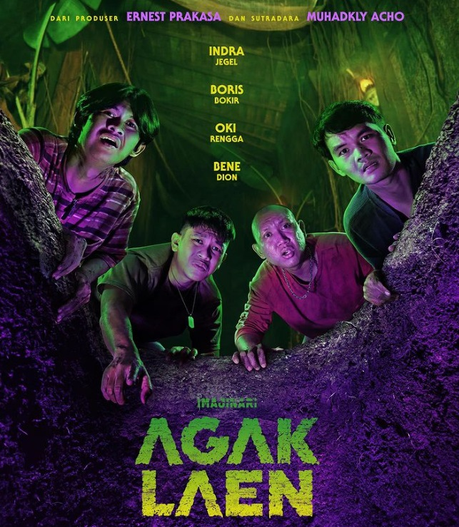

| Poster |
Movie |
Description |
|  |
Agak Laen |
"Agak Laen" is an Indonesian comedy film directed by Bene Dion Rajagukguk, released in 2024. The movie follows the journey of four friends, who accidentally become involved in a series of strange and humorous events after discovering a mysterious object. Their ordinary daily lives turn into complete chaos when the object is revealed to possess supernatural powers, leading them into various comical and tense situations. As they strive to restore normalcy, they face numerous challenges, including a confrontation with a group of criminals also seeking the mysterious object. Throughout their adventure, the audience is treated to a mix of laugh-out-loud comedy scenes and touching moments that strengthen their friendship. "Agak Laen" combines unique Indonesian humor with fresh fantasy elements, enhanced by the performances of talented actors. The film provides delightful entertainment with a message about friendship, courage, and the importance of staying calm amidst unexpected circumstances. |
|
Exhuma |
Exhuma is a South Korean horror thriller film released on February 28, 2024. Directed by Jang Jae-hyun, the film tells about the supernatural journey of two heroes, Hwa-ra (Kim Go-eun) and Bong-il (Lee Do-hyon), who are called by a wealthy family to help cope with the strange event that has struck them. The wealthy family lives in Los Angeles and is experiencing a series of dangerous mysterious events, including a newborn baby. They call on Hwa-ra and Bong-il to help uncover the mystery behind the strange event. On their journey, Hva-ra, and Bung-il discover that the bizarre event is linked to the cruel curse of their ancestors. In the process, they also find the tombs of the cursed ancestors and must face the dangerous consequences of their actions. |
|
Mai |
"Mai" is a 2024 Vietnamese drama film directed by Nguyễn Phan Quang Bình. It follows the journey of Mai, portrayed by Lê Thuỳ Anh, as she returns to her hometown in Vietnam after years in Ho Chi Minh City. The film explores Mai's personal growth, family dynamics, and romantic relationships amidst a backdrop of traditional values and modern aspirations. Through beautiful cinematography and a poignant storyline, "Mai" offers a heartfelt exploration of identity, love, and the complexities of Vietnamese society. |